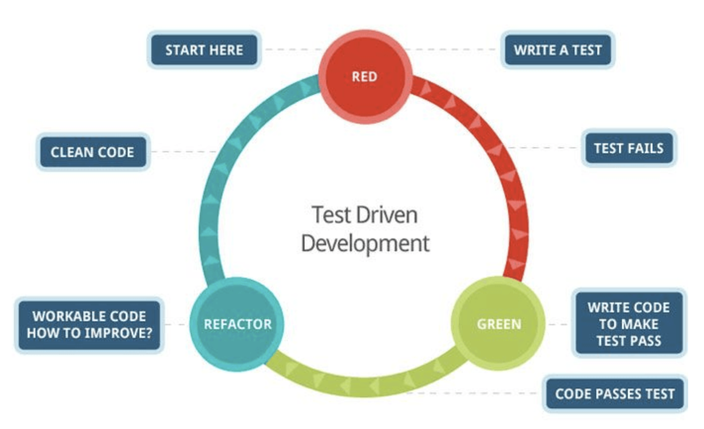
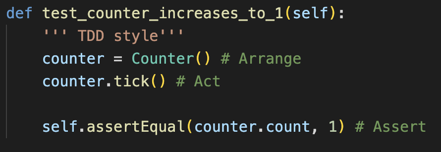
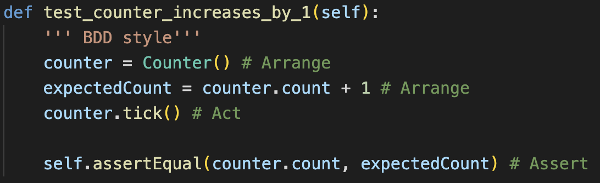

Mer om tester och testmetoder
Test Driven development (TDD)
Källa: ISD part of intergroup
Behavior Driven development (BDD)
BDD-cykeln är mycket lik TDD-cykeln. Vi börjar med att skapa ett acceptanstest, sedan skriver vi kod som som gör att testet blir godkänt. Vi upprepar denna cykel tills produkten är klar.
Vi har klassen Counter med en räknare count som startar på 0. Instansmetoden tick() räknar upp count med 1.
 Som en användare Vill jag kunna logga in med användarnamn och lösenord Så att jag kan komma åt systemet.
Story: Som en användare Vill jag kunna logga in med användarnamn och lösenord Så att jag kan komma åt systemet.
Givet: Användarnamn och lösenord är korrekt
När: Användaren anger användarnamn och lösenord och klickar på knappen “logga in”
Då: Loggas användaren in
Eller Givet: Lösenordet är felaktigt Då visas ett felmeddelande
Krav: Die konstruktorn; om värdet > MAX_ROLL_VALUE, sätt värdet till MAX_ROLL_VALUE
och om värdet < MIN_ROLL_VALUE, sätt värdet till MIN_ROLL_VALUE
Testkrav: skapa ett Die objekt med ett otillåtet värde
Testfall:
Arrange & act: skapa ett Die objekt Die(100) och gör assertEquals med MAX_ROLL_VALUE
Testfall:
Arrange & act: skapa ett Die objekt Die(0) eller Die(-1) och gör assertEquals med MIN_ROLL_VALUE
Krav: Die konstruktorn; Om man inte skickar med ett argument ska det slumpas fram ett värde till tärningen.
Testkrav: skapa ett Die objekt utan argument
Dåligt testfall:
Arrange & act: skapa ett Die objekt Die() och assertIsInstance(Die) eller assertNotNone()
Bra testfall:
Arrange & act: skapa ett Die objekt Die() och assertLessEqual med MAX_ROLL_VALUE och assertGreaterEqual med MIN_ROLL_VALUE
Antag exemplet med Yahtzeeklassen SameValueRule där klasserna Ones, Twos osv ärver från SameValueRule. Antag en lista, taken_sameValueRules med objekt av SameValueRule.
Testkrav: Listan innehåller objektet Ones. Verifiera att ettorna är tagna.
Testfall:
Arrange & act: skapa ett Ones objekt Ones() och lägg i listan taken_sameValueRules och gör assertIsInstance(Ones), assertNotIsInstance(Twos) etc